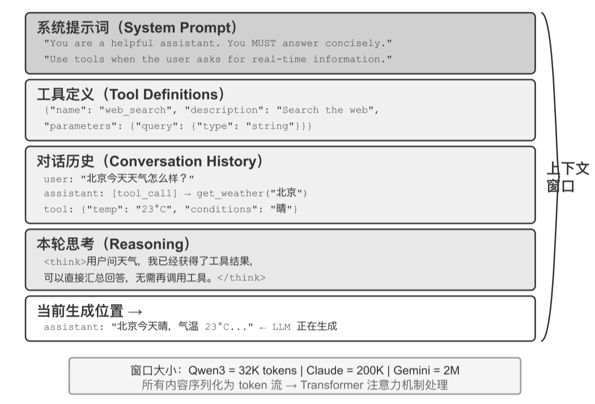

API 上下文结构
以 Chat Completions 为例拆解每次调用的完整请求构成，掌握后续所有技术的基础。
大语言模型在标准测试中成绩亮眼，到了实际业务场景却常常让人失望。原因不是模型不够聪明，而是它缺少执行具体任务所必需的背景信息——产品架构、业务规则、内部约定。本章的主旨由此展开：决定 Agent 在业务中发挥价值的，往往不是模型参数量，而是它在每个决策点能获得多少、多精准的上下文。本节先回答“为什么上下文如此关键”，并给出贯穿全章的理论框架——ReAct 中关于上下文的精确定义。
模型要执行具体任务，需要通用模型根本不知道的背景信息（产品架构、业务规则、内部约定）。上下文的质量，才是 Agent 能力的真正上限。
设想一位天才工程师加入你的团队：他具备深厚的理论功底和卓越的编程能力，但对你们的产品架构、业务逻辑、技术债务、团队规范一无所知。更糟的是，关键的架构决策散落在不同团队成员的记忆中，代码库也缺乏文档。这位天才即便智力超群，也难以发挥真正的价值——这恰恰是当前 AI Agent 面临的困境。

一个中等能力的模型配上精心组织的上下文，往往能胜过一个顶级模型在信息匮乏下的盲目摸索。模型本身的智力只是基础。
本章后续将围绕这个结构的每一层展开，六条线索环环相扣：
以 Chat Completions 为例拆解每次调用的完整请求构成，掌握后续所有技术的基础。
利用静态前缀的不变性加速推理——理解为什么“前面不能动”。
如何设计好的 System Prompt，并在上下文层面防御提示注入。
如何按需加载专业知识，避免提示词无限膨胀。
如何在对话末尾注入动态状态信息，弥补模型无法主动归纳隐式状态的不足。
如何在对话历史膨胀时进行智能压缩，让上下文保持高信息密度。
给模型看什么、怎么组织，比模型本身有多聪明往往更影响最终结果。每项技术都是在当前模型能力边界下，用工程手段最大化信息利用效率。
以一个 Coding Agent 为例：同样是“帮我修复这个 bug”的指令，Agent 拿到的上下文质量直接决定了它能否完成任务。有效工作所需的信息可以归为三类：
当前代码库的目录结构、各模块的职责划分、核心数据结构的定义、团队的代码规范。
没有这些，Agent 写出的代码可能语法正确，但风格与项目格格不入，甚至引入架构层面的冲突。
Git 分支策略、代码提交规范、代码审查流程、CI/CD 管线的要求。
缺少这些，Agent 可能直接往主分支提交未经测试的代码。
开发环境的配置、测试数据库的连接地址、测试环境的部署方式、API 密钥的管理方式。
没有这些，Agent 在本地能跑通的修复，到了测试环境可能立刻崩溃。
这三类信息——代码信息、流程规范、环境信息——构成了 Agent 有效工作的最低信息需求。
这里进入上下文的是对环境的观察、描述或配置，而不是环境本身。Environment 仍是 Agent 在外部与之交互的对象——上下文承载的是环境信息的表征，而非被交互的实体。
上下文工程因此成为利用现有模型开发高效 Agent 的关键所在。它不仅仅是往 prompt 里塞更多信息技术问题，而是要系统性地设计、组织和提供 AI 完成任务所需的全部背景知识。
上下文工程不仅仅是一个技术问题，更是一个组织问题。大多数团队的关键知识都是隐性的：架构决策只有老员工记得，业务规则靠口口相传，重要的背景信息锁在私聊记录里。如果团队本身就是一个信息黑洞，再好的 AI Agent 也无计可施。
Linux 内核这样的开源项目提供了一个很好的范例：分布在全球的开发者协作维护了三十多年，成功的秘诀是高度透明、文档驱动的沟通文化——所有讨论公开进行，每个决策都有详细记录，任何新加入者都能通过阅读历史来理解代码的演化逻辑。这种工作方式天然创造了 AI 友好的环境：信息是公开的、可检索的、结构化的。
AI Agent 就像一个永远的新员工：给足背景信息，它能干得很好；什么都不告诉它，再聪明也是白搭。所以构建 AI 原生团队，首先是一场文档化运动，而不只是部署新工具。
“人和模型一样，最重要的是 Context。”他在 OpenAI 的工作“也没有那么难，如果换一个其他人，如果有他所有的 context，也是能干的”。
这恰恰是上下文工程要解决的核心问题：如何把 Agent 需要的背景信息系统性地、结构化地送到模型面前。
ReAct 被广泛视为基于大语言模型构建 Agent 的奠基性工作之一。论文开篇用一句话把 Agent、Environment、Context 和 Action 的关系连了起来：
Consider a general setup of an agent interacting with an environment for task solving. At time step t, an agent receives an observation ot ∈ 𝒪 from the environment and takes an action at ∈ 𝒜 following some policy π(at | ct), where ct = (o1, a1, …, ot−1, at−1, ot) is the context to the agent.
Yao, Shunyu, et al. “ReAct: Synergizing Reasoning and Acting in Language Models.” ICLR, 2023.
Agent 的下一步行动取决于截至当前的完整交互上下文 ct，而不只是眼前这一条输入。过去的每一个观察与行动都参与塑造下一步的决策。
| ReAct 概念 | LLM Agent 中的对应物 |
|---|---|
| 观察 ot（来自环境） | 用户消息、工具执行结果 |
| 行动 at（Agent 采取） | 模型回复、工具调用请求 |
| 上下文 ct（累积历史） | 观察与行动交替累积形成的交互历史（第一章定义的“轨迹”） |
真实 API 请求还会在这段历史之前放入系统提示词和工具定义，共同组成模型本轮实际收到的上下文。
模型 API 本身是无状态的——每次调用都必须由 Agent 框架重新构造足够的上下文。最直接、无损的做法是带上此前的完整消息历史；生产系统也可以做摘要和压缩，但不能悄悄丢掉决定下一步行动所需的信息。
后文所有上下文布局、状态栏和压缩技术，都可以看作在回答同一个问题：怎样以更低成本向模型提供一个信息充分的 ct？
那么，这些上下文信息在技术上到底是以什么形式送给大模型的？这引出了全章的结构性框架——“静态前缀 + 轨迹”：
系统提示词与工具定义在对话过程中保持不变，构成上下文最前端的固定部分。
对话历史即轨迹，随着每轮交互不断增长，构成上下文的动态部分。
这是第一章“上下文的五个组成部分”在 API 层面的具体样子：系统提示词和工具定义构成静态前缀，用户消息、模型回复和工具执行结果构成动态增长的消息历史。理解了这个结构，就能理解为什么“前面不能动、后面可以压缩”。